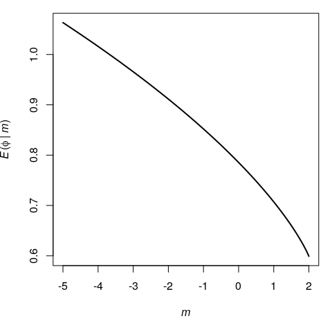

Complex incomplete elliptic integral of the second kind
The incomplete elliptic integral of the second kind is usually defined by \[ E(\phi \mid k) = \int_0^\phi \sqrt{1 - k^2\sin^2t}\,\mathrm{d}t \] for \(-\frac{\pi}{2} \leqslant \phi \leqslant \frac{\pi}{2}\) and \(k^2 \leqslant \frac{1}{\sin^2\phi}\).
It can be evaluated in R with the gsl package:
f <- function(t, k) sqrt(1 - k^2*sin(t)^2)
phi <- 1; k <- 0.5
integrate(f, 0, phi, k = k)$value
## [1] 0.9648765
gsl::ellint_E(phi, k)
## [1] 0.9648765That said, this elliptic integral is more generally defined by \[ E(\phi \mid m) = \int_0^\phi \sqrt{1 - m\sin^2t}\,\mathrm{d}t \] for \(-\frac{\pi}{2} \leqslant \phi \leqslant \frac{\pi}{2}\) and \(-\infty < m \leqslant \frac{1}{\sin^2\phi}\).
Evaluation of \(E(\phi \mid m)\)
Thus, gsl allows to evaluate \(E(\phi \mid m)\) for a positive value of the parameter \(m\) only, with the ellint_E function. However it is possible to use gsl to evaluate \(E(\phi \mid m)\) for a negative parameter \(m\), with the help of the Carlson elliptic integrals \(R_F\) and \(R_D\). These elliptic integrals are evaluated in gsl by the functions ellint_RF and ellint_RD.
E <- function(phi, m){
if(phi == 0){
0
}else if(phi == pi/2 && m == 1){
1
}else if(phi >= -pi/2 && phi <= pi/2){
sine <- sin(phi)
sine2 <- sine*sine
cosine2 <- 1 - sine2
oneminusmsine2 <- 1 - m*sine2
sine * (gsl::ellint_RF(cosine2, oneminusmsine2, 1) -
m * sine2 * gsl::ellint_RD(cosine2, oneminusmsine2, 1) / 3)
}else{
NaN
}
}Let’s try it:
You can compare with EllipticE[1,-5] on WolframAlpha.
Here is how the function looks like for a fixed value of \(\phi\):
opar <- par(mar = c(5,4,1,1))
phi <- pi/4
curve(
E(phi, x), from = -5, to = 1/sin(phi)^2, lwd = 2,
xlab = expression(italic(m)),
ylab = expression(paste(italic(E), "(", italic(phi1), " | ", italic(m), ")"))
)
Extending \(E(\phi \mid m)\) to arbitrary real \(\phi\)
There is a continuous extension of \(E(\phi \mid m)\). It is given by the formula \[ E(\phi + k\pi \mid m) = 2 k E\Bigl(\frac{\pi}{2} \mid m\Bigr) + E(\phi \mid m) \] for any \(k \in \mathbb{Z}\).
E <- function(phi, m){
if(phi == 0){
0
}else if(phi == pi/2 && m == 1){
1
}else if(phi >= -pi/2 && phi <= pi/2){
sine <- sin(phi)
sine2 <- sine*sine
cosine2 <- 1 - sine2
oneminusmsine2 <- 1 - m*sine2
sine * (gsl::ellint_RF(cosine2, oneminusmsine2, 1) -
m * sine2 * gsl::ellint_RD(cosine2, oneminusmsine2, 1) / 3)
}else if(phi > pi/2){
k <- 0
while(phi > pi/2){
phi <- phi - pi
k <- k + 1
}
2*k*E(pi/2, m) + E(phi, m)
}else{
k <- 0
while(phi < -pi/2){
phi <- phi + pi
k <- k - 1
}
2*k*E(pi/2, m) + E(phi, m)
}
}Let’s try it:
and compare with EllipticE[7,-5] on WolframAlpha.
Extending \(E(\phi \mid m)\) to complex \(\phi\) and \(m\)
Now we will construct the analytical continuation of \(E(\phi \mid m)\).
I found a nice implementation of the Carlson elliptic integrals here, which can easily be generalized to complex values of the parameters:
RF <- function(x, y, z, minerror = 1e-7){
x <- as.complex(x); y <- as.complex(y); z <- as.complex(z)
dx <- dy <- dz <- Inf
while(max(dx,dy,dz) > minerror){
lambda <- sqrt(x)*sqrt(y) + sqrt(y)*sqrt(z) + sqrt(z)*sqrt(x)
x <- (x + lambda) / 4
y <- (y + lambda) / 4
z <- (z + lambda) / 4
A <- (x+y+z) / 3
dx <- Mod(1 - x/A)
dy <- Mod(1 - y/A)
dz <- Mod(1 - z/A)
}
E2 <- dx*dy + dy*dz + dz*dx
E3 <- dy*dx*dz
(1 - E2/10 + E3/14 + E2*E2/24 - 3*E2*E3/44 - 5*E2*E2*E2/208 +
3*E3*E3/104 + E2*E2*E3/16) / sqrt(A)
}
RD <- function(x, y, z, minerror = 1e-7){
x <- as.complex(x); y <- as.complex(y); z <- as.complex(z)
dx <- dy <- dz <- Inf
s <- 0; fac <- 1
while(max(dx,dy,dz) > minerror){
lambda <- sqrt(x)*sqrt(y) + sqrt(y)*sqrt(z) + sqrt(z)*sqrt(x)
s <- s + fac / (sqrt(z) * (z + lambda))
fac <- fac/4
x <- (x + lambda) / 4
y <- (y + lambda) / 4
z <- (z + lambda) / 4
A <- (x + y + 3*z) / 5
dx <- Mod(1 - x/A)
dy <- Mod(1 - y/A)
dz <- Mod(1 - z/A)
}
E2 <- dx*dy + dy*dz + 3*dz*dz + 2*dz*dx + dx*dz + 2*dy*dz
E3 <- dz*dz*dz + dx*dz*dz + 3*dx*dy*dz + 2*dy*dz*dz + dy*dz*dz + 2*dx*dz*dz
E4 <- dy*dz*dz*dz + dx*dz*dz*dz + dx*dy*dz*dz + 2*dx*dy*dz*dz
E5 <- dx*dy*dz*dz*dz
3*s +
fac * (1 - 3*E2/14 + E3/6 + 9*E2*E2/88 - 3*E4/22 - 9*E2*E3/52 + 3*E5/26 -
E2*E2*E2/16 + 3*E3*E3/40 + 3*E2*E4/20 + 45*E2*E2*E3/272 -
9*(E3*E4 + E2*E5)/68) / A / sqrt(A)
}An important note. In the link I gave above, the author takes \[ \lambda = \sqrt{xy} + \sqrt{yz} + \sqrt{zx} \] whereas I take \[ \lambda = \sqrt{x}\sqrt{y} + \sqrt{y}\sqrt{z} + \sqrt{z}\sqrt{x}. \] This is important: the square root of a product is not equal to the product of the square roots in general, for complex numbers!
Now here is the implementation of the incomplete elliptic integral of the second kind allowing complex values of \(\phi\) and \(m\):
E <- function(phi, m){
if(phi == 0){
0
}else if(phi == pi/2 && m == 1){
1
}else if(Re(phi) >= -pi/2 && Re(phi) <= pi/2){
sine <- sin(phi)
sine2 <- sine*sine
cosine2 <- 1 - sine2
oneminusmsine2 <- 1 - m*sine2
sine * (RF(cosine2, oneminusmsine2, 1) -
m * sine2 * RD(cosine2, oneminusmsine2, 1) / 3)
}else if(Re(phi) > pi/2){
k <- 0
while(Re(phi) > pi/2){
phi <- phi - pi
k <- k + 1
}
2*k*E(pi/2, m) + E(phi, m)
}else{
k <- 0
while(Re(phi) < -pi/2){
phi <- phi + pi
k <- k - 1
}
2*k*E(pi/2, m) + E(phi, m)
}
}Let’s try it:
and compare with EllipticE[7+2I,-5] on WolframAlpha.
I also find the same results as the ones of WolframAlpha when \(\phi\) and \(m\) are complex.
E(phi = 1+1i, m = -5i) # same as Wolfram
## [1] -0.66421+1.746623i
E(phi = 7+2i, m = -5i) # same as Wolfram
## [1] 14.95287+4.83345iResorting to the Appell function
As a sanity check, let’s propose another way.
This way consists in using the relation between the incomplete elliptic integral of the second kind and the first Appell hypergeometric function: \[ E(\phi, m) = \sin\phi \times F_1\Bigl(\frac12, \frac12, -\frac{3}{2}, \sin^2\phi, m\sin^2\phi\Bigr), \] for \(-\frac{\pi}{2} \leqslant \Re(\phi) \leqslant \frac{\pi}{2}\).
Unfortunately there’s no available R implementation of \(F_1\) allowing complex values of the variables. Then we will use the Euler integral representation \[ F_1\Bigl(\frac12, \frac12, -\frac{3}{2}, z_1, z_2\Bigr) = \frac12\int_0^1 \frac{\sqrt{1-z_2t}}{\sqrt{t}\sqrt{1-z_1t}}\,\mathrm{d}t. \]
integrand <- function(t, z1, z2){
sqrt(1-t*z2) / sqrt(t) / sqrt(1-t*z1)
}
integrandRe <- function(t, z1, z2) Re(integrand(t, z1, z2))
integrandIm <- function(t, z1, z2) Im(integrand(t, z1, z2))
E <- function(phi, m){
if(phi == 0){
0
}else if(phi == pi/2 && m == 1){
1
}else if(Re(phi) >= -pi/2 && Re(phi) <= pi/2){
sine <- sin(phi)
sine2 <- sine*sine
re <- integrate(integrandRe, 0, 1, z1 = sine2, z2 = m*sine2)
im <- integrate(integrandIm, 0, 1, z1 = sine2, z2 = m*sine2)
sine/2 * (re$value + 1i*im$value)
}else if(Re(phi) > pi/2){
k <- 0
while(Re(phi) > pi/2){
phi <- phi - pi
k <- k + 1
}
2*k*E(pi/2, m) + E(phi, m)
}else{
k <- 0
while(Re(phi) < -pi/2){
phi <- phi + pi
k <- k - 1
}
2*k*E(pi/2, m) + E(phi, m)
}
}
#
E(1+1i, -5i) # almost the same as before
## [1] -0.664216+1.746635i
#
E(7+2i, -5i) # almost the same as before
## [1] 14.95287+4.83346iThe slight differences are due to the numerical integrations. The previous way is preferable.